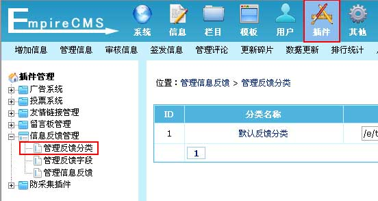

| 三、管理反馈分类 |
| 一个反馈分类为一个信息反馈表单。 |
| 1、登录后台，单击“插件”菜单，选择“管理反馈分类”子菜单，进入管理反馈分类界面： |
|  |
| 2、进入管理反馈分类界面： |
|
| 3、点击“默认反馈分类”的修改，进入反馈分类修改界面： |
 |
| 分类名称 |
填写本表单的名称。 |
| 管理反馈的用户 |
选择可管理这个分类的信息反馈的用户。 |
| 提交会员组权限 |
设置提交表单最低权限。 |
| 选择本表单的字段项 |
字段标识：表单中设置项的名称。
提交项：可以填写内容的字段。
必填项：设置此字段内容不能为空。 |
| 录入表单模板 |
增加表单后自动生成的表单模板内容，增加表单时一般不设置，可增加表单后再修改。
[!--cp.header--]、[!--cp.footer--]：分别为公共模板里控制面板模板内容。
表单模板内容支持公共模板变量。 |
| |
自动生成表单：修改表单时可以选择让系统再次自动生成表单模板。 |
| 注释 |
填写备注内容。 |
|
| 相关内容 |
增加反馈分类时的反馈表单模板可以任意修改，只要name变量名不变，改成其他表单元素都可以。比如：性别：<input
type="text" name="sex"
value="">，你也可以改成<input type="radio" name="sex"
value="男">男<input type="radio" name="sex"
value="女">女
这样的形式。 |
| 小技巧：把表单模板复制到dreamweaver编辑，这样比较好修改。 |